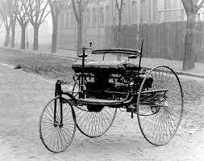

The BMW emblem corresponds to the white and blue colors of the flag of Bavaria and is a stylized image of the propeller of the aircraft, the engines for which were produced by the company at the beginning of its foundation.
In 1916, the company signed a contract for the production of V12 engines for Austria-Hungary. In need of additional funding, Rapp receives the support of Camillo Castiglioni and Max Fritz, the company is recreated as Bayerische Motoren Werke GmbH. Excessive expansion caused complications, Rapp left the company and the management of the company was taken over by Austrian industrialist Franz Joseph Popp in 1917, the company was renamed BMW AG in 1918.
In 1919, Franz Diemer set the first BMW world record, climbing to a height of 9760 meters in an airplane with a BMW engine.
After World War I, the Treaty of Versailles (1919) banned aircraft production in Germany. Otto closed his factory and BMW switched to the production of brakes for trains.
BMW R32 - the very first motorcycle brand BMW, 1923. In 1919, BMW developed its first motorcycle engine, which was used in the Victoria model, which was produced by the company in the city of Nuremberg.
1922 – BMW builds its current main building east of Munich's Oberwiesenfeld Airport (today it is the city's Olympic Center).
In 1923, BMW produces the first motorcycle - R32, which had a horizontal-boxer air-cooled engine of 500 cm³.
1924 - the first intercontinental flight to Persia on an aircraft equipped with BMW engines.
1926 – The Rohrbach Ro VII seaplane powered by the BMW VI sets five world records.
1927 – 87 world records in aviation were set that year. 29 of them are on aircraft with BMW engines.
BMW 502 V8 3.2 L 1939 – start of mass production of the largest and most powerful pre-war model BMW 335

1950 – BMW R51 / 2 – revival of motorcycles with two-cylinder engines.
BMW 1600 1951 – BMW produces its first post-war car – 501.
1954 – BMW becomes world champion in motorcycle racing with sidecars and holds the world championship for the next twenty years.
BMW R 1200 RT 1955 – BMW Triebwerk GmbH comes back to life. The company focuses on the tradition of aircraft engine manufacturing. The next step in the right direction was a change in BMW's policy in order to popularize its products with the middle class. And the first mass car in the postwar years was the BMW Isetta. The idea of creating a miniature car belonged to the Italian company Iso, and the prototype body created by it was bought by the Germans.
BMW 525i E34 1956 – Sports cars models 503 and 507.
1959 – The 700 was the first major production success for BMW cars. BMW is up for sale.
1994 – The BMW plant in Spartanburg was launched. The 16th branch of BMW de Mexico SA was opened, a sales representative office was established in Beijing.
1995 – Presentation of the legendary BMW Z3 Roadster. The car becomes a movie star and starred in a James Bond film.
1999 - At the Detroit Auto Show, the presentation of the new all-wheel drive car BMW X5 takes place.
Today, BMW, which began with a small aircraft engine plant, manufactures its products in five plants in Germany and twenty-two subsidiaries around the world.